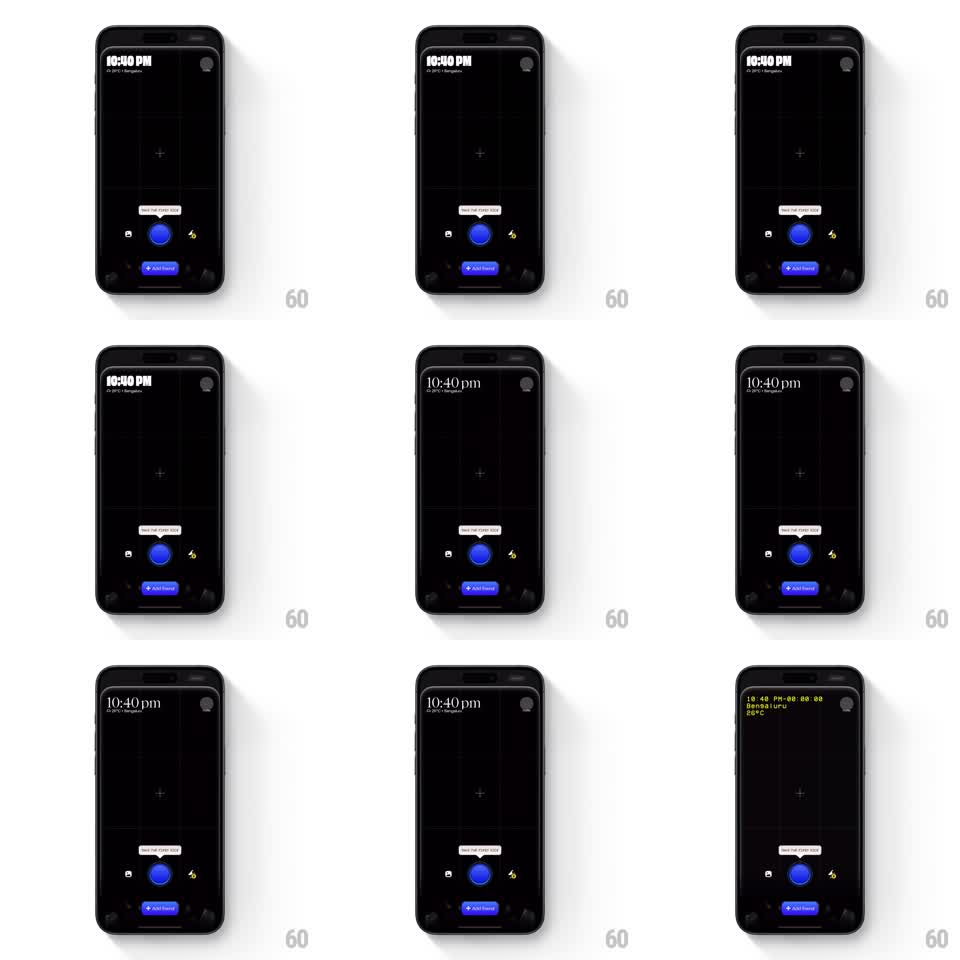

Media
Frame-by-frame

Rebuild this animation 1:1: Tilt's idle capture screen - a pulsing shutter button with a gently bobbing tooltip coaching the user toward their first photo.

Rebuild this animation 1:1: Tilt's idle capture screen - a pulsing shutter button with a gently bobbing tooltip coaching the user toward their first photo.
## Integration
Integration: stack-agnostic spec - springs given as stiffness/damping, timed motions as duration + curve; map every value to your framework and animation library of choice.
## Scene
The capture screen at rest: viewfinder area, a large circular shutter button centered at the bottom, and a small tooltip bubble above it ("Tap to take your first photo"). The scene idles - no user input - and the motion is the coach.
## Motion spec
Pattern: idle pulse + bobbing tooltip.
- The shutter button breathes: an outer ring scales 1.0 to 1.15 and fades (1.8s loop, ease-out), echoing like a slow sonar ping; a second ring follows 400ms behind.
- The button core subtly scales 1.0 to 1.04 on the same period, in phase with the ring.
- The tooltip bobs: translateY 0 to -8px and back (2.2s, ease-in-out), with its little pointer triangle anchored to the button.
- The tooltip text swaps or shimmers every ~4s to keep the coach alive (opacity crossfade, 300ms).
- On tap: the pulse rings collapse inward (150ms), the button compresses (scale 0.9, 100ms) and fires; the tooltip slides up and fades (200ms) - coaching ends the moment the user acts.
## Calibration
- Idle motion amplitude stays small - this is a heartbeat, not an alarm; if it reads as urgent, halve the scale range.
- All idle loops run on independent periods so the composition never visibly repeats.
## Reduced motion
Static button and tooltip; no pulse or bob.
## Don't miss
- The rings emit from the button's exact center and clip to the screen - no rectangular fade edges.
- The tooltip never overlaps the button; the bob keeps a constant gap.